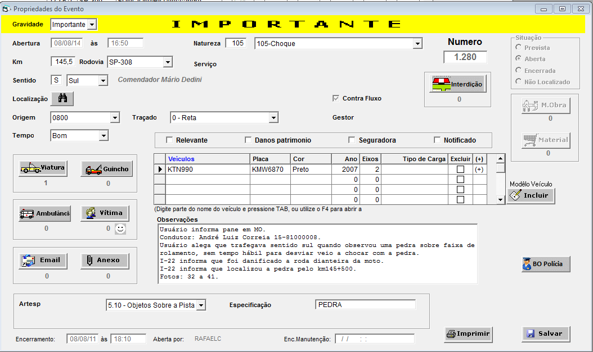
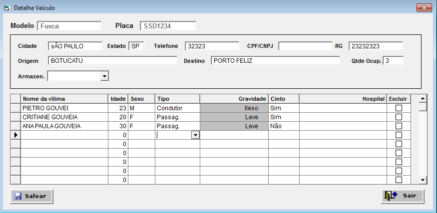
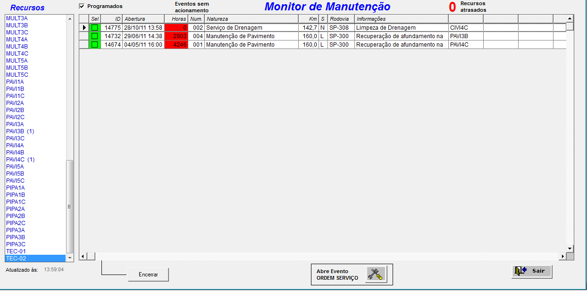

SGR - Sistema de Gerenciamento de Recursos
SGR ajuda você a monitorar e agir ativamente sobre tudo que está acontecendo na sua rodovia, e assim utilizar da forma mais racional possível todos os recursos de que tem acesso.
Foi desenvolvido e implementado por nós com sucesso absoluto, em tempo recorde, numa das maiores concessionárias de rodovias do Brasil. Sua operação é bastante amigável, sua customização é muito fácil e a estabilidade é uma de suas maiores virtudes. Suas principais funções são:
O SGR conta com diferentes módulos, cada um desenvolvido com a intenção de facilitar a vida de seus usuários em diferentes situações. São eles:
Módulo de Operação
Aplicação desenvolvida para monitorar a operação através de combinação de várias janelas, botões e cores. Tem como principais funcionalidades:
-
- Monitor que permite ter uma visualização completa de tudo o que está ocorrendo na rodovia (eventos abertos, viaturas acionadas, atrasos no atendimento, eventos programadas, viaturas em serviço, viaturas fora de serviço, localização de cada viatura, quantidade de eventos destinados a cada viatura, etc.)
-
- Registro de eventos com dados relacionados (veículos, vítimas, viaturas de apoio, guinchos, ambulâncias, documentos anexos e texto livre)
 -
- Registro/Consulta de dados de veículos e vítimas relacionados aos eventos.
 -
- Atualização de horários das viaturas de forma direta
-
- Registro/Consulta de naturezas de eventos com código, nome, gravidade, e obrigatoriedades de preenchimento
Esse módulo também possibilita aos seus usuários, ter outras informações como:
- - Ocorrências abertas (data, hora, natureza, localização, gravidade etc..);
- - Veículos e pessoas envolvidos na ocorrência;
- - Viaturas acionadas para cada ocorrência;
- - Viaturas que estão com o atendimento em dia, próximas de um atraso e atrasadas;
- - Viaturas que estão em serviço, onde estão baseadas e quantas ocorrências têm para atender;
- - Viaturas que estão fora de serviço;
- - Recursos externos que podem ser acionados;
- - Eventos programados para os próximos dias;
- - Abertura de uma nova ocorrência;
- - Registro de entrada ou saída de viatura em serviço.
Módulo de Ouvidoria
Aplicação específica para uso da ouvidoria e operadores do serviço 0800, a qual registra reclamações, elogios, pedidos de informações etc. Neste módulo o operador do 0800 pode também abrir uma nova ocorrência ou ainda consultar as ocorrências abertas e assim responder com precisão às eventuais dúvidas dos usuários. Também é possível pelo Módulo do 0800 abrir processos e controlar sua circulação interna bem como registrar todos os contatos feitos com o usuário e o desfecho final do processo. Tem como principais funcionalidades:
-
- Registro de processo de Ouvidoria;
-
- Registro de Contatos com usuários;
-
- Síntese de operações do período (numero de eventos, numero de veículos, número de vítimas, número de viaturas utilizadas, médias de tempos de atendimento);
-
- Performance de viaturas com percentual de ocupação e gráfico dos atendimentos com rastreabilidade das informações apresentadas;
Módulo de Manutenção
Aplicação desenvolvida para controlar a abertura e execução de Ordens de Serviços as quais podem ser na Rodovia ou em outras instalações da concessionária. Nesse módulo é possível controlar a aplicação de recursos, materiais e custos e é integrado com o módulo de operações. Tem como principais funcionalidades:
-
- Monitor que permite ter uma visualização completa de todas as Ordens de Serviços abertas, ordens programadas, e prestadores de serviços disponíveis e alocados;
 -
- Apontamento de horas e medição de Mão de Obra;
-
- Apontamento de materiais utilizados na OS
No módulo de Manutenção existe também um sub-módulo capaz de realizar remotamente, inclusão e manutenção de Ordens de Serviços através de mini formulários desenvolvido em ambiente web que podem ser acessados de qualquer dispositivo que tenha acesso a internet.